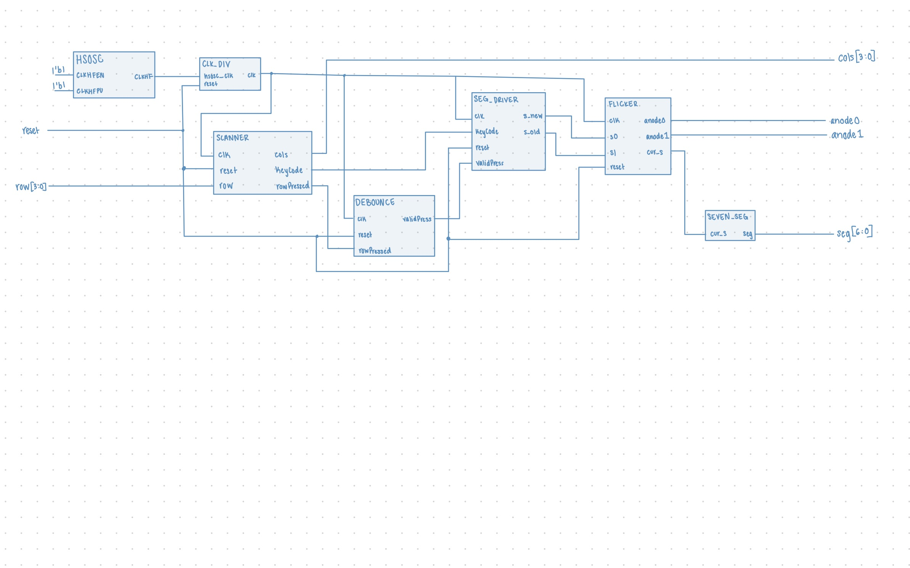
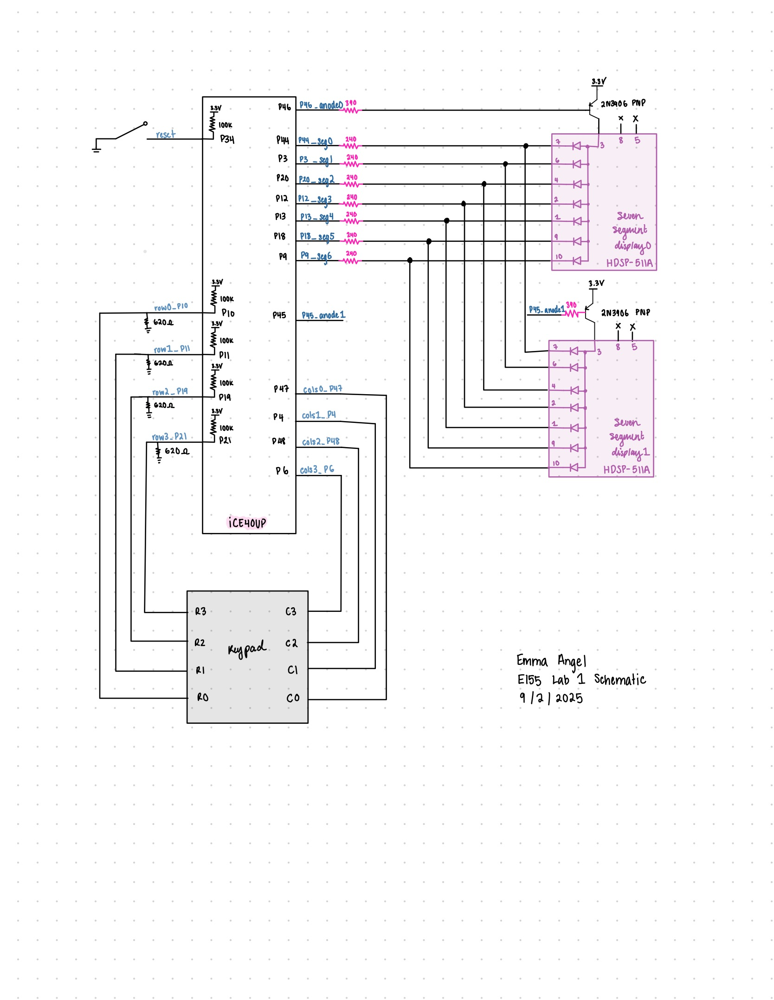
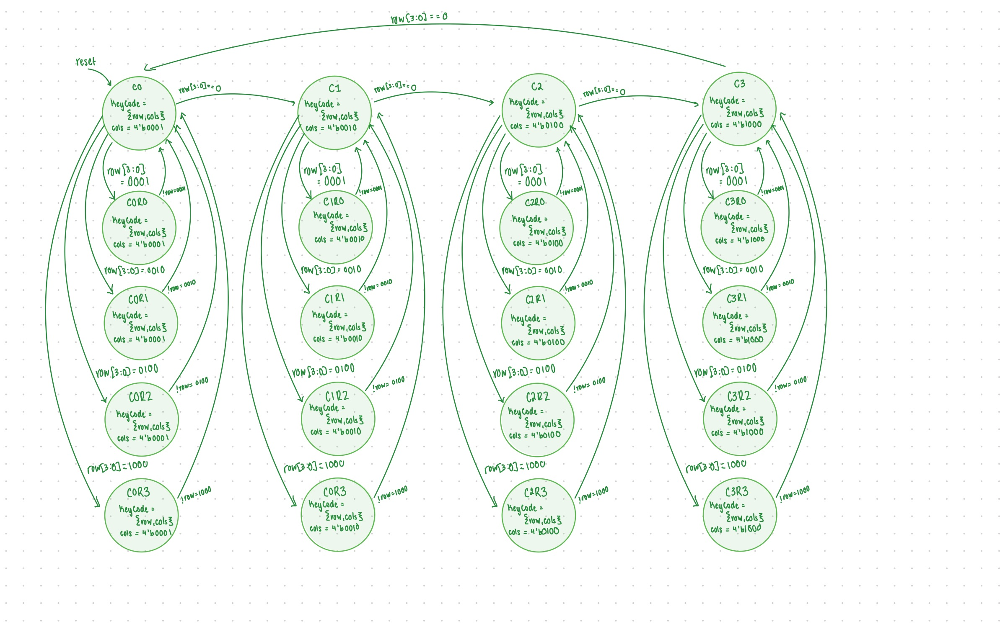
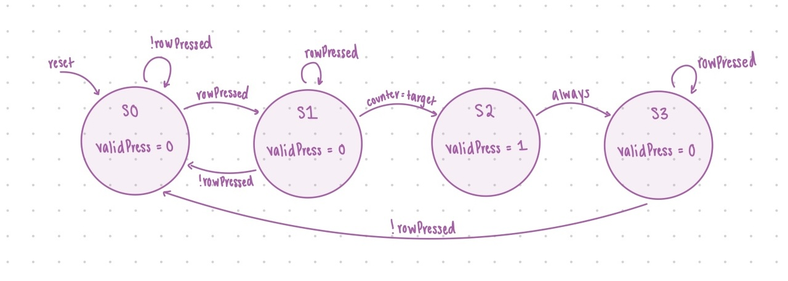

Lab 3 Report
Introduction
In this lab, a design was implemented on the FPGA to program a two seven segment displays from 0 to F using a single seven segment module given an input from a keypad. The most recent pressed button is shown on the right and the previous on the left.
Design and Testing Methodology
Design Overview
The first step in the design was to determine the fsm behavior that was needed to implement the scanner. A very basic scanner fsm was implemented. The output of that was then fed into another fsm that handled the debouncing of the keys. This was done by implenting a counter that counted until a certain target until the button is determined to be a valid press. This is then fed into a driver module that decodes the button pressed, updates the display, and then outputs the segment displays to the seven segment display and flickering module. The on-board high-speed oscillator was used to generate a 48MHz clock. This was then divided down to 183 Hz for the entire system to run on. This was done to control the scanning fsm which needed to be at a slower rate. The same clock was used for all modules for a synchronous design. ### Testing Procedure
The design was testing in both hardware and in simulation. Simulated showed accurate behavior of each individual module.
Technical Documentation
Source Code
Block diagram

The block diagram in Figure 1 demonstrates the overall architecture of the design. The top module utilizes the HSOSC built in module for the clk. The submodule scanner is the fsm that scans the keypad for key presses and the debouncer module is another fsm that debounces the key press. The seg driver module decodes the key pressed to get the actual value and then updates the display accordingly. The submodule seven_seg handles the seven segment display outputs. The submodule flicker handles the alternating flickering signals and outputting the correct s value to be displayed at a given time.
Schematics
 Figure 2 shows the physical layout of the design. The columns of the keypad were driven by output pins and the rows were read. A pulldown resistor of 680 ohms was used as pull downs on the row columns to avoid invalid logic inputs. The circuit for the seven segment display remained the same as in lab 2. The seven segment displays used a 240 ohm resistor. The transistor was used to drive a large amount of current for the anode pins of the display and a 390 ohm resistor was used to limit current draw from the FPGA pin.
FSM
 
These are the fsms implemented for the scanning of the keypad and the debouncing of the keys. ## Results and Discussion
Testbench Simulation
Simulations were done but not shown here.
Conclusion
The design was semi successful with the two seven segment diplays displaying the button pressed and also updating accordingly. The design does not respond to other key presses while a key is stil being held. I spent maybe 60-70 hours on this lab.
AI Prototype Summary
Code produced by chatGPT from the first prompt.
//============================================================
// Clock divider: generate slow enable ticks
//============================================================
module clock_divider #(
parameter int INPUT_HZ = 20_000_000,
parameter int SCAN_HZ = 200, // for keypad scan
parameter int MUX_HZ = 1000 // for display multiplex
)(
input logic clk,
input logic rst_n,
output logic tick_scan, // ~200 Hz
output logic tick_mux // ~1 kHz
);
localparam int SCAN_DIV = INPUT_HZ / SCAN_HZ;
localparam int MUX_DIV = INPUT_HZ / MUX_HZ;
int cnt_scan;
int cnt_mux;
always_ff @(posedge clk or negedge rst_n) begin
if (!rst_n) begin
cnt_scan <= 0;
cnt_mux <= 0;
tick_scan <= 0;
tick_mux <= 0;
end else begin
// scan tick
if (cnt_scan == SCAN_DIV-1) begin
cnt_scan <= 0;
tick_scan <= 1;
end else begin
cnt_scan <= cnt_scan + 1;
tick_scan <= 0;
end
// mux tick
if (cnt_mux == MUX_DIV-1) begin
cnt_mux <= 0;
tick_mux <= 1;
end else begin
cnt_mux <= cnt_mux + 1;
tick_mux <= 0;
end
end
end
endmodule
//============================================================
// Keypad scanner: active-low 4x4 matrix
//============================================================
module keypad_scanner(
input logic clk,
input logic rst_n,
input logic tick_scan, // slow scan enable
output logic [3:0] col_n, // active-low columns
input logic [3:0] row_n, // active-low rows
output logic [3:0] key_code, // hex 0–F
output logic key_valid // pulse when new key registered
);
typedef enum logic [1:0] {IDLE, PRESSED} state_t;
state_t state, nxt_state;
logic [1:0] col_idx;
logic [3:0] active_row;
logic [3:0] latched_key;
logic key_reg;
// Column drive: one low at a time
always_ff @(posedge clk or negedge rst_n) begin
if (!rst_n) col_idx <= 0;
else if (tick_scan) col_idx <= col_idx + 1;
end
assign col_n = ~(4'b0001 << col_idx); // active-low one column
// Decode key when row is active
always_comb begin
active_row = ~row_n; // convert to active-high
latched_key = 4'hX;
case (col_idx)
2'd0: latched_key = {2'b00, active_row[1:0]}; // rows 0–3 → codes 0–3
2'd1: latched_key = {2'b00, active_row[1:0]} + 4'd4;
2'd2: latched_key = {2'b00, active_row[1:0]} + 4'd8;
2'd3: latched_key = {2'b00, active_row[1:0]} + 4'd12;
endcase
end
// FSM to register single key per press-release
always_ff @(posedge clk or negedge rst_n) begin
if (!rst_n) state <= IDLE;
else state <= nxt_state;
end
always_comb begin
nxt_state = state;
key_reg = 0;
case (state)
IDLE: if (|active_row) begin
nxt_state = PRESSED;
key_reg = 1; // latch once
end
PRESSED: if (~|active_row) nxt_state = IDLE; // wait for release
endcase
end
// Outputs
always_ff @(posedge clk or negedge rst_n) begin
if (!rst_n) begin
key_code <= 4'h0;
key_valid <= 0;
end else begin
key_valid <= key_reg;
if (key_reg) key_code <= latched_key;
end
end
endmodule
//============================================================
// Seven segment hex decoder (active-low segments)
//============================================================
module sevenseg_decoder(
input logic [3:0] val,
output logic [6:0] seg_n // {a,b,c,d,e,f,g}, active-low
);
always_comb begin
case (val)
4'h0: seg_n = 7'b1000000;
4'h1: seg_n = 7'b1111001;
4'h2: seg_n = 7'b0100100;
4'h3: seg_n = 7'b0110000;
4'h4: seg_n = 7'b0011001;
4'h5: seg_n = 7'b0010010;
4'h6: seg_n = 7'b0000010;
4'h7: seg_n = 7'b1111000;
4'h8: seg_n = 7'b0000000;
4'h9: seg_n = 7'b0010000;
4'hA: seg_n = 7'b0001000;
4'hB: seg_n = 7'b0000011;
4'hC: seg_n = 7'b1000110;
4'hD: seg_n = 7'b0100001;
4'hE: seg_n = 7'b0000110;
4'hF: seg_n = 7'b0001110;
default: seg_n = 7'b1111111;
endcase
end
endmodule
//============================================================
// Top level
//============================================================
module top_keypad_display(
input logic clk, // ~20 MHz internal osc
input logic rst_n,
input logic [3:0] row_n, // keypad rows (active-low)
output logic [3:0] col_n, // keypad cols (active-low)
output logic [6:0] seg_n, // segments (active-low)
output logic [1:0] dig_n // digit enables (active-low)
);
logic tick_scan, tick_mux;
clock_divider div(
.clk(clk), .rst_n(rst_n),
.tick_scan(tick_scan),
.tick_mux(tick_mux)
);
logic [3:0] key_code;
logic key_valid;
keypad_scanner scan(
.clk(clk), .rst_n(rst_n),
.tick_scan(tick_scan),
.col_n(col_n), .row_n(row_n),
.key_code(key_code), .key_valid(key_valid)
);
// Shift register for last two keys
logic [3:0] digit_lo, digit_hi;
always_ff @(posedge clk or negedge rst_n) begin
if (!rst_n) begin
digit_lo <= 4'h0;
digit_hi <= 4'h0;
end else if (key_valid) begin
digit_hi <= digit_lo;
digit_lo <= key_code;
end
end
// Display multiplex
logic mux_sel;
always_ff @(posedge clk or negedge rst_n) begin
if (!rst_n) mux_sel <= 0;
else if (tick_mux) mux_sel <= ~mux_sel;
end
logic [3:0] val;
always_comb begin
if (mux_sel) begin
val = digit_hi;
dig_n = 2'b10; // left digit active
end else begin
val = digit_lo;
dig_n = 2'b01; // right digit active
end
end
sevenseg_decoder dec(.val(val), .seg_n(seg_n));
endmodule
```system verilog
//-----------------------------------------------------------------------------
// Keypress Register with One-Shot Pulse and Debounce
// For 4x4 matrix keypad systems
// Target: Lattice iCE40 UP5K
//-----------------------------------------------------------------------------
module keypress_register #(
parameter KEY_WIDTH = 4 // 4 bits for hex keypad
)(
input logic clk,
input logic reset_n, // Active-low sync reset
input logic key_valid, // High when a key is detected (debounced scan result)
input logic [KEY_WIDTH-1:0] key_code, // Current key code from scanner
output logic new_key_pulse, // One-cycle pulse on new keypress
output logic [KEY_WIDTH-1:0] reg_key // Last registered key code
);
// FSM state definitions
typedef enum logic [1:0] {
IDLE = 2'b00, // No key pressed
PRESSED = 2'b01, // Key press accepted, waiting for release
HOLD = 2'b10 // Key still held, ignore until release
} state_t;
state_t state, next_state;
// Outputs and registers
logic [KEY_WIDTH-1:0] next_reg_key;
logic pulse_int;
// Sequential state & outputs
always_ff @(posedge clk or negedge reset_n) begin
if (!reset_n) begin
state <= IDLE;
reg_key <= '0;
new_key_pulse <= 1'b0;
end else begin
state <= next_state;
reg_key <= next_reg_key;
new_key_pulse <= pulse_int;
end
end
// FSM next state logic
always_comb begin
next_state = state;
next_reg_key = reg_key;
pulse_int = 1'b0;
case (state)
IDLE: begin
if (key_valid) begin
// First detection of a new key
next_state = PRESSED;
next_reg_key = key_code;
pulse_int = 1'b1; // Fire one-shot
end
end
PRESSED: begin
if (key_valid) begin
// Stay here while key remains pressed
next_state = HOLD;
end else begin
// If glitch/release quickly, go back to IDLE
next_state = IDLE;
end
end
HOLD: begin
if (!key_valid) begin
// Key released → ready for next press
next_state = IDLE;
end
end
default: next_state = IDLE;
endcase
end
endmodule
I feel like the first prompt was pretty okay. It synthesized in radiant just fine. At a glance I see the main ideas in the code produced that should cover most cases.